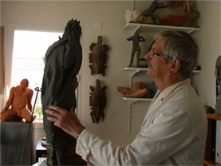

Autodidacte, ses premières activités artistiques furent le dessin et la peinture. En 1999 il commence la sculpture : terre, plâtre, pierre en taille directe et se perfectionne à l’atelier public de sculpture de Laval avec Robert Lerivrain. De précieuses rencontres telles Lydie Arickx, Robert Couturier, Lisbeth Delisle, Louis Derbré, influenceront ses sujets et techniques. Désormais il cherche à faire de sa sculpture des instantanés de corps en mouvement, en équilibre, figés dans l’espace. Son travail devient plus rugueux, plus saillant pour jouer davantage avec la lumière et rendre les corps plus puissants et plus vivants. En 2003, un stage chez Francine Toulemonde l’initie à la technique du bronze.
Prix et distinctions
- 2002 – Prix sculpture – Festival des mains libres. Château-Gontier.
- 2004 – Prix sculpture – Festival des mains libres. Château-Gontier.
- 2009 – Prix du jury – 17e Salon d’Art Saint-Aignan de Grand Lieu
- 2011 – Prix du jury – 32e Salon de Chartres.
- 2012 – Prix Louis Derbré – 53° Expo régionale d’Art d’ Ernée
- 2013 – Prix du Conseil Général Salon de St Brévin les Pins.
- 2014 – Prix Jean-Marie Zacchi Salon St Germain-Les-Corbeil .
- 2014 – Prix du Salon- 149ème Salon de Versailles
- 2014 – Prix du Conseil Général de l'Essonne- Ballancourt sur Essonne